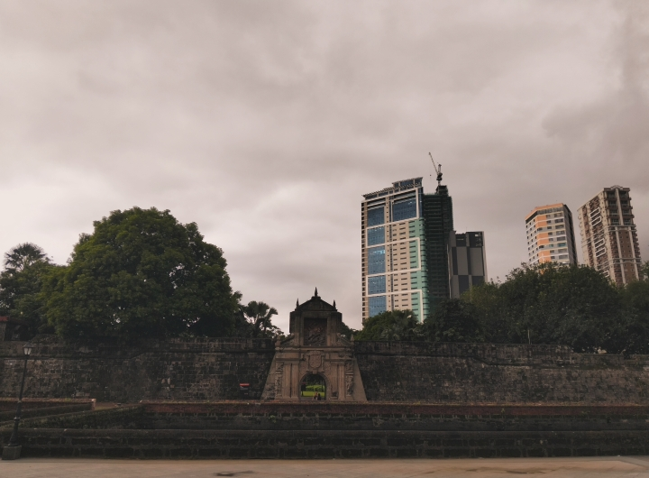

This is me with my best friend on our first day of college. I was so glad
and excited that after two years, we were finally studying at the
same school again. We toured around the campus together, exploring
every corner and familiarizing ourselves with the place.
It felt comforting to know that I wasn’t alone on this new journey,
and I am really grateful to have her by my side. We're just so
inseparable.

These are my classmates whom I got to know during the first weeks
of college. Day by day, we’re learning more about each other and slowly
becoming friends as we hang out, talk, and share moments together
both during and after class.


This was during the General Assembly of the (CAS) College of Arts and
Sciences. We had a lot of fun playing games and actively participating in the
activities. Upon entering, we were given freebies, which added to the
excitement. Overall, it was a fun and enjoyable experience that made the event
truly memorable.
This was during Ignite, the welcoming event for freshmen. Every performance
was amazing, especially when artists Maven and Angela Ken performed. Afterward
came the raffle draw. At the very end, the grand prize was announced—and to my
surprise, my student number was called! I honestly didn’t expect to win the Instax,
especially since we were about to go home but couldn’t leave because the way was
blocked. Staying until the end turned out to be worth it. I was shocked at first,
then I came running to the stage to claim the prize. I felt so grateful that day!”

We really struggled to explore Intramuros because the rain suddenly poured
heavily. We had to look for shelter, but since it lasted for quite a
while, we ended up getting soaked. Eventually, we all agreed to stay at
the Lego Museum for a while. On the way there, we shared umbrellas with each
other, which made the experience more fun despite the hassle. In the end, it
was all worth it because so many memorable moments happened, it even helped
our section bond quickly, even though we weren’t that close yet. The only
downside was that our feet were aching by the time we were about to go home,
since we all walked for too long.

We were invited to celebrate our classmate’s birthday, and it turned out
to be such a fun and memorable day. We took lots of group photos, shared
laughter, and enjoyed every moment together. What made it even more special
was the bond we created that day, it wasn’t just about celebrating a birthday,
but also about making memories as classmates and friends.

We once again went out as a group to play billiards at Fishermall. Afterwards,
some of us also tried the bumper cars, and we even planned to go for KTV.
Unfortunately, we couldn’t all fit inside the rooms, so we decided to head home
instead. Still, it was a fun experience overall, and it made me happy that our
section has already gone on so many trips together even if it can be a little
expensive at times.
← Back